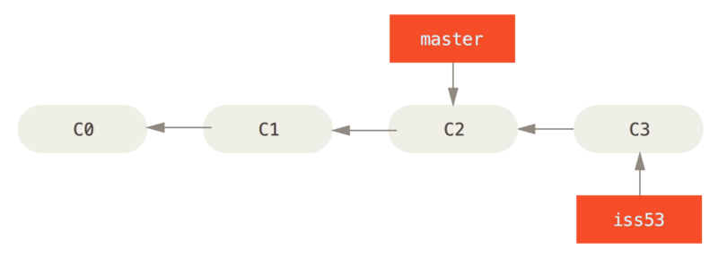

Git Learning
Git 本质上是一个（分布式）版本管理系统：抛弃“分布式版本管理”这个看似专业的名词，Git的目的就为了对一个项目从最初到最终的的变化进行细致高效的管理。因为对于一个大型的项目，开发的过程中会有许多阶段，每个阶段也会出现许多的问题，每次对问题的修订和每一个新的项目阶段就会产生一个新的项目版本，而有些问题是错综复杂，相互联系的，有些阶段也不是线性提升的，所以产生众多盘根错节的版本是极有可能的，更不用说在由多人进行团队项目开发的情况下了。所以，如何对一个项目从初始的雏形到最终的定稿的每一次修订，每一次更改进行细致高效的管理就是一个严重影响开发效率的问题。而Git正是这个问题的最佳解决方法（之一）。其独特的分支体系，将每一次修订产生的版本进行“快照”储存，记录版本发展历史和信息，让项目的开发更加高效。
Git 基础
获取Git仓库
git init <!--hexoPostRenderEscape:<figure class="highlight plain"><table><tr><td class="gutter"><pre><span class="line">1</span><br><span class="line">2</span><br><span class="line">3</span><br><span class="line">4</span><br><span class="line">5</span><br><span class="line">6</span><br><span class="line">7</span><br><span class="line">8</span><br></pre></td><td class="code"><pre><span class="line"></span><br><span class="line">+ 对现有项目进行管理，创建名为`.git`的子目录，所以拥有这个子目录的文件夹意味着已经使用了git进行项目（版本）管理。</span><br><span class="line"></span><br><span class="line">+ `git inti`进行初始化Git仓库不会对文件进行跟踪，也就是实质上这个仓库并没有开始进行项目管理，需要使用：`git add`命令进行对指定文件的跟踪，然后使用`git commit`进行提交：</span><br><span class="line"></span><br><span class="line"> ```shell</span><br><span class="line"> $ git add . #对文件夹下所有文件进行跟踪</span><br><span class="line"> $ git commit -m 'initial project version' #提交，并对本次提交做出比标记</span><br></pre></td></tr></table></figure>:hexoPostRenderEscape-->git clone [url] <your dir> <!--hexoPostRenderEscape:<figure class="highlight plain"><table><tr><td class="gutter"><pre><span class="line">1</span><br><span class="line">2</span><br><span class="line">3</span><br><span class="line">4</span><br><span class="line">5</span><br><span class="line">6</span><br><span class="line">7</span><br><span class="line">8</span><br><span class="line">9</span><br><span class="line">10</span><br><span class="line">11</span><br></pre></td><td class="code"><pre><span class="line"></span><br><span class="line"> + 通过链接克隆现有的仓库：Git克隆该Git仓库服务器上所有数据，包括每一个文件和其对应的所有版本（Git本质是版本控制系统），同样会在本地目录下初始化一个`.git`文件夹，存储远程仓库下拉得所有数据。</span><br><span class="line"></span><br><span class="line"> + 通过`git clone`方法克隆的Git仓库已经默认跟踪了该项目中的所有文件，不需要再手动`git add`进行跟踪添加（但是可以删除跟踪一些文件，下文再说）。</span><br><span class="line"></span><br><span class="line">### 记录每次更新到仓库</span><br><span class="line"></span><br><span class="line">再次回到Git的本质——版本管理系统：所以我们对于项目的每一次修改都要进行版本更行的记录，这样才能让Git来帮我们进行管理。</span><br><span class="line"></span><br><span class="line">1. ```shell</span><br><span class="line"> git status</span><br></pre></td></tr></table></figure>:hexoPostRenderEscape--> + 查看文件（在Git仓库里）的状态：会显示比如没有跟踪（add）的文件，跟踪（add）了并进行了修改但是没有提交（commit）的文件。 + `git status -short`或者`git status -s`命令可以输出更简洁紧凑的形式： <!--hexoPostRenderEscape:<figure class="highlight shell"><table><tr><td class="gutter"><pre><span class="line">1</span><br><span class="line">2</span><br><span class="line">3</span><br><span class="line">4</span><br><span class="line">5</span><br><span class="line">6</span><br></pre></td><td class="code"><pre><span class="line"><span class="meta">$</span><span class="bash"> git status -s</span></span><br><span class="line"> M file_1</span><br><span class="line">MM file_2</span><br><span class="line">A file_3</span><br><span class="line">M file_4</span><br><span class="line">?? file_5</span><br></pre></td></tr></table></figure>:hexoPostRenderEscape--> + `M` 标记表示文件被修改过：靠右的`M`表示该文件被修改了但是没有放入暂存区；靠左边的`M`表示该文件被修改了并放入了暂存区；`MM`表示文件被修改后放入到暂存区又被修改了（第二次修改没有放入暂存区），所以暂存区和工作区都有修改记录。 + `A`标记表示文件被新添加到暂存区中（即add）。 + `??`标记表示文件新添加但未进行跟踪。git add <new file or dir> <!--hexoPostRenderEscape:<figure class="highlight plain"><table><tr><td class="gutter"><pre><span class="line">1</span><br><span class="line">2</span><br><span class="line">3</span><br><span class="line">4</span><br><span class="line">5</span><br><span class="line">6</span><br><span class="line">7</span><br><span class="line">8</span><br><span class="line">9</span><br><span class="line">10</span><br><span class="line">11</span><br><span class="line">12</span><br><span class="line">13</span><br><span class="line">14</span><br></pre></td><td class="code"><pre><span class="line"></span><br><span class="line"> + 跟踪新文件，将文件暂存，等待提交（commit）——此时使用`git status`会显示`Changes to be committed`</span><br><span class="line"> + 对于已跟踪的文件，进行修改后，使用`git add`将已修改的文件暂存（进入“暂存区”）——如果修改后没有进行`git add`暂存，此时使用`git status`会显示`Changes not staged for commit`，表示已跟踪文件发生修改，但没有放入暂存区。</span><br><span class="line"> + add语句之后接文件或者目录参数，可以实现批量跟踪。</span><br><span class="line"> + 注意：`git add`记录版本是瞬时的——也就是说只会记录add时刻的版本信息，如果add之后再对文件进行修改，不会对暂存区内的版本有影响，需要再次提交`git add`进行更行暂存</span><br><span class="line"></span><br><span class="line">3. `.gitignore`文件：</span><br><span class="line"></span><br><span class="line"> + 这个文件中列出的所有文件都不会被Git跟踪，例如</span><br><span class="line"></span><br><span class="line"> ```shell</span><br><span class="line"> $ cat .gitignore</span><br><span class="line"> *.[oa]</span><br><span class="line"> *~</span><br></pre></td></tr></table></figure>:hexoPostRenderEscape--> + 具体`.gitignore`文件的书写规则参考[](https://github.com/github/gitignore)git diff <!--hexoPostRenderEscape:<figure class="highlight plain"><table><tr><td class="gutter"><pre><span class="line">1</span><br><span class="line">2</span><br><span class="line">3</span><br><span class="line">4</span><br><span class="line">5</span><br><span class="line">6</span><br><span class="line">7</span><br></pre></td><td class="code"><pre><span class="line"></span><br><span class="line"> + `git diff`用来查看未暂存的文件更新的具体部分</span><br><span class="line"> + `git diff -cached`用来查看已暂存的文件更新的具体部分</span><br><span class="line"> + 此命令输出内容语法比较复杂，可有需要再查阅详细教程</span><br><span class="line"></span><br><span class="line">5. ```shell</span><br><span class="line"> git commit</span><br></pre></td></tr></table></figure>:hexoPostRenderEscape--> + `git commit -m 'comment'`将***暂存区***中的***文件快照***进行提交 + 所以文件修改暂存提交的一般步骤是先`git add`暂存再进行`git commit`提交，但是也可以加上`-a`参数进行一步暂存提交：`git commit -a -m 'comment'`：此命令会把所有已跟踪过得文件暂存然后一并提交git rm <!--hexoPostRenderEscape:<figure class="highlight plain"><table><tr><td class="gutter"><pre><span class="line">1</span><br><span class="line">2</span><br><span class="line">3</span><br><span class="line">4</span><br><span class="line">5</span><br><span class="line">6</span><br><span class="line">7</span><br><span class="line">8</span><br></pre></td><td class="code"><pre><span class="line"></span><br><span class="line"> + 完整从本地和Git中删除文件的步骤：</span><br><span class="line"> + 如果删除之前文件没有修改并添加到暂存区：先手动删除工作目录中的文件`rm file`（此时运行`git status`会显示删除文件操作没有进行暂存`Changes not staged for commit`）；再用`git rm file`在暂存区记录此次删除文件操作（此时运行`git status`会显示删除文件操作等待提交`Changes to be committed`）；再进行提交`git commit`，该文件不再纳入版本管理</span><br><span class="line"> + 如果删除之前文件进行了修改并且添加到了暂存区：删除命令加`-f`（force）强制删除</span><br><span class="line"> + 只从Git仓库中删除，不跟踪但保留本地文件：`git rm --cached file`</span><br><span class="line"></span><br><span class="line">7. ```shell</span><br><span class="line"> git mv <file_from> <file_to></span><br></pre></td></tr></table></figure>:hexoPostRenderEscape--> + 此时用`git status`会显示`renamed: <file_from> -> <file_to>`
撤销操作
git commit --amend <!--hexoPostRenderEscape:<figure class="highlight plain"><table><tr><td class="gutter"><pre><span class="line">1</span><br><span class="line">2</span><br><span class="line">3</span><br><span class="line">4</span><br><span class="line">5</span><br><span class="line">6</span><br><span class="line">7</span><br></pre></td><td class="code"><pre><span class="line"></span><br><span class="line">+ 此命令将会提交此时暂存区中的文件，并且覆盖（代替）上一次的提交，例如：</span><br><span class="line"></span><br><span class="line"> ```shell</span><br><span class="line"> $ git commit -m 'initial commit'</span><br><span class="line"> $ git add <new_file></span><br><span class="line"> $ git commit --amend</span><br></pre></td></tr></table></figure>:hexoPostRenderEscape--> 最终只会有最后一次的提交git reset HEAD <file> <!--hexoPostRenderEscape:<figure class="highlight plain"><table><tr><td class="gutter"><pre><span class="line">1</span><br><span class="line">2</span><br><span class="line">3</span><br><span class="line">4</span><br><span class="line">5</span><br><span class="line">6</span><br><span class="line">7</span><br><span class="line">8</span><br><span class="line">9</span><br><span class="line">10</span><br><span class="line">11</span><br><span class="line">12</span><br><span class="line">13</span><br><span class="line">14</span><br><span class="line">15</span><br><span class="line">16</span><br><span class="line">17</span><br><span class="line">18</span><br><span class="line">19</span><br><span class="line">20</span><br><span class="line">21</span><br><span class="line">22</span><br><span class="line">23</span><br></pre></td><td class="code"><pre><span class="line"></span><br><span class="line">+ 此命令可以取消暂存区的`<file>`文件，然后放入工作区，例如</span><br><span class="line"></span><br><span class="line"> ```shell</span><br><span class="line"> $ git add *</span><br><span class="line"> $ git status</span><br><span class="line"> On branch master</span><br><span class="line"> Changes to be committed:</span><br><span class="line"> (use "git reset HEAD <file>..." to unstage)</span><br><span class="line"> renamed: README.md -> README</span><br><span class="line"> modified: CONTRIBUTING.md</span><br><span class="line"> $ git reset HEAD CONTRIBUTING.md</span><br><span class="line"> Unstaged changes after reset:</span><br><span class="line"> M CONTRIBUTING.md</span><br><span class="line"> $ git status</span><br><span class="line"> On branch master</span><br><span class="line"> Changes to be committed:</span><br><span class="line"> (use "git reset HEAD <file>..." to unstage)</span><br><span class="line"> renamed: README.md -> README</span><br><span class="line"> Changes not staged for commit:</span><br><span class="line"> (use "git add <file>..." to update what will be committed)</span><br><span class="line"> (use "git checkout -- <file>..." to discard changes in working directory)</span><br><span class="line"> modified: CONTRIBUTING.md</span><br></pre></td></tr></table></figure>:hexoPostRenderEscape--> 可见将`CONTRIBUTING.md`文件从暂存区取出，放入了工作区修改未暂存的状态git chekout -- <file> <!--hexoPostRenderEscape:<figure class="highlight plain"><table><tr><td class="gutter"><pre><span class="line">1</span><br><span class="line">2</span><br><span class="line">3</span><br><span class="line">4</span><br><span class="line">5</span><br><span class="line">6</span><br><span class="line">7</span><br><span class="line">8</span><br></pre></td><td class="code"><pre><span class="line"></span><br><span class="line"> + 此命令能撤销之前所做的修改</span><br><span class="line"> + 注：一般不要使用这个命令</span><br><span class="line"></span><br><span class="line">### 远程仓库</span><br><span class="line"></span><br><span class="line">1. ```shell</span><br><span class="line"> git remote</span><br></pre></td></tr></table></figure>:hexoPostRenderEscape--> + `git remote`命令会显示已经配置的远程仓库服务器，但是只会显示Git保存的简写（如默认名字origin） + `git remote -v`命令会显示远程仓库的URL和Git保存的简写名称，并且会显示你拥有的读（拉取）和写（推送）的权限，例如 <!--hexoPostRenderEscape:<figure class="highlight shell"><table><tr><td class="gutter"><pre><span class="line">1</span><br><span class="line">2</span><br><span class="line">3</span><br><span class="line">4</span><br><span class="line">5</span><br></pre></td><td class="code"><pre><span class="line"><span class="meta">$</span><span class="bash"> git remote -v</span></span><br><span class="line">origin <URL_1> (fetch)</span><br><span class="line">origin <URL_1> (push)</span><br><span class="line">koke <URL_2> (fetch)</span><br><span class="line">koke <URL_2> (push)</span><br></pre></td></tr></table></figure>:hexoPostRenderEscape--> + `git remote add <shortname> <URL>`命令会添加远程服务器仓库，并设置简写名称（不设置的话是默认名称origin）。这个简写名称将可以在命令中用来代替整个URL。 + `git remote show [remote-name]`命令会列出远程从库的URL与跟踪分支等信息 + `git remote rename [original-name] [new-name]`将远程仓库`[original-name]`命名为`[new-name]` + `git remote rm [remote-name]`可以移除远程仓库git fetch [remote-name] <!--hexoPostRenderEscape:<figure class="highlight plain"><table><tr><td class="gutter"><pre><span class="line">1</span><br><span class="line">2</span><br><span class="line">3</span><br><span class="line">4</span><br><span class="line">5</span><br><span class="line">6</span><br></pre></td><td class="code"><pre><span class="line"></span><br><span class="line"> + 这个命令访问简写名称远程仓库，并从中拉取所有你还没有的数据。</span><br><span class="line"> + ***注意：这个命令会将数据拉取到本地仓库，但是不会自动合并或者修改当前的工作，需要手动将其合并入你的工作。***</span><br><span class="line"></span><br><span class="line">3. ```shell</span><br><span class="line"> git pull [remote-name]</span><br></pre></td></tr></table></figure>:hexoPostRenderEscape--> + 这个命令会自动抓取远程仓库的内容并合并远程分支到当前分支：例如git clone命令会自动设置本地的master分支跟踪远程仓库的默认分支（一般是master，也可以修改为其他的任意分支），在本地master分支运行`git pull`会从跟踪的远程仓库分支拉取数据并自动合并到当前的分支。git push [remote-name] [branch-name] <!--hexoPostRenderEscape:<figure class="highlight plain"><table><tr><td class="gutter"><pre><span class="line">1</span><br><span class="line">2</span><br><span class="line">3</span><br><span class="line">4</span><br><span class="line">5</span><br><span class="line">6</span><br><span class="line">7</span><br><span class="line">8</span><br><span class="line">9</span><br><span class="line">10</span><br><span class="line">11</span><br><span class="line">12</span><br><span class="line">13</span><br><span class="line">14</span><br><span class="line">15</span><br><span class="line">16</span><br><span class="line">17</span><br><span class="line">18</span><br><span class="line">19</span><br><span class="line">20</span><br><span class="line">21</span><br><span class="line">22</span><br><span class="line">23</span><br><span class="line">24</span><br><span class="line">25</span><br><span class="line">26</span><br><span class="line">27</span><br><span class="line">28</span><br><span class="line">29</span><br><span class="line">30</span><br><span class="line">31</span><br></pre></td><td class="code"><pre><span class="line"></span><br><span class="line"> + 此命令会将本地的`[branch-name]`分支推送到`[remote-name]`对应的远程服务器上。</span><br><span class="line"> + ***注意：当你有克隆服务器的写入权限，并且之前没有人推送过时，此命令才能生效。如果你和他人在同一时间克隆，他们先推送到上游然后你再推送，则你的推送会被拒绝，你需要先将他们的工作拉取下来（`fetch`or`pull`）合并到你的工作才能推送——总结：先pull再push***</span><br><span class="line"></span><br><span class="line">## Git 分支</span><br><span class="line"></span><br><span class="line">### 分支介绍</span><br><span class="line"></span><br><span class="line">1. Git仓库对象结构：</span><br><span class="line"></span><br><span class="line"> + **提交对象**（包含所有提交信息和指向树对象的指针） ——> **树对象**（记录目录结构和blob对象索引） ——> **blob对象**（保存文件快照）</span><br><span class="line"> </span><br><span class="line"></span><br><span class="line">2. 多次提交更新版本：</span><br><span class="line"></span><br><span class="line"> + 做修改后再次提交，这次的提交对象会包含一个指向上次提交对象（父对象，旧版本）的指针</span><br><span class="line"></span><br><span class="line"> </span><br><span class="line"></span><br><span class="line">3. Git分支：</span><br><span class="line"></span><br><span class="line"> + Git的分支，***本质上就是指向提交对象的可变指针***</span><br><span class="line"></span><br><span class="line"> </span><br><span class="line"></span><br><span class="line"> Git的默认分支是`master`，在多次提交后，`master`分支指向最后那个提交对象，它会在每次提交中自动向前（更新的版本）移动</span><br><span class="line"></span><br><span class="line">### 分支创建和切换</span><br><span class="line"></span><br><span class="line">1. ```shell</span><br><span class="line"> git branch testing</span><br></pre></td></tr></table></figure>:hexoPostRenderEscape--> + 此命令会在当前提交的对象上创建一个分支指针  其中`HEAD`指针***指向当前所在的本地分支***，在上例中，在`master`分支上创建新的`testing`分支不会自动切换到新的分支；`master`和`testing`分支均指向`f30ab`的提交对象git checkout testing <!--hexoPostRenderEscape:<figure class="highlight plain"><table><tr><td class="gutter"><pre><span class="line">1</span><br><span class="line">2</span><br><span class="line">3</span><br><span class="line">4</span><br><span class="line">5</span><br><span class="line">6</span><br><span class="line">7</span><br><span class="line">8</span><br><span class="line">9</span><br><span class="line">10</span><br><span class="line">11</span><br><span class="line">12</span><br></pre></td><td class="code"><pre><span class="line"></span><br><span class="line"> + 此命令让`HEAD`指针指向`testing`分支，即改变当前本地所在分支为`testing`</span><br><span class="line"></span><br><span class="line"> </span><br><span class="line"></span><br><span class="line">3. `HEAD`分支移动：</span><br><span class="line"></span><br><span class="line"> + `HEAD`分支会随着提交操作自动向前（更新的版本方向）移动，例如在上例`testing`分支中再进行一次提交：</span><br><span class="line"></span><br><span class="line"> ```shell</span><br><span class="line"> $ vim test.rb</span><br><span class="line"> $ git commit -a -m 'made a change'</span><br></pre></td></tr></table></figure>:hexoPostRenderEscape-->  可见，`testing`分支向前移动了，而`master`分支没有移动，也就是说，此时对于一个项目而言，`master`分支保留了较旧的版本，而`testing`分支保留了较新的版本 + 此时若`git checkout`切回`master`分支工作并进行项目提交，就会出现项目的分叉，导致项目朝着不同的方向发展： 
分支的新建与合并——分支流程初探
分支的新建：
假设你在你的项目上工作，你的项目从
C0提交版本更新到c2提交版本：
此时，突然发现有一个问题#53需要解决，我们选择新建一个分支并切换到那个分支上，可以使用
git checkout -b iss53进行分支的创建和切换：
现在对#53问题进行修复，
iss53分支随着工作的进展向前推进：
此时你又发现在原有工作的基础上有一个紧急问题需要解决，只需要切回
master分支，在原来的版本基础上新建hotfix分支进行紧急问题的处理（checkout之前先保证工作区和暂存区的干净，因为这些没有提交的修改可能会和检出的分支产生冲突，从而组织Git切换到该分支）：
分支的合并：
合并没有分叉的分支：
在上例中，我们解决了呃
hotfix紧急问题，现在需要将其合并回master分支，使用git merge命令：1
2
3
4
5
6git checkout master
git merge hotfix
Updating f42c576..3a0874c
Fast-forward
index.html | 2 ++
1 file changed, 2 insertions(+)
在输出中出现
Fast-forward快进，也就是说当前的master分支指向的提交是想要合并的提交的直接上游，所以合并操作只是将master指针向前移动。然后可以使用
git branch -d hotfix删除分支：
合并有分叉的分支：
在上例中，我们现在需要将
iss53分支合并到master分支中，由于master分支所指向的提交不是iss53分支所指向提交的直接祖先，所以Git会将两个分支所指的快照（C4和C5）以及这两个分支的共同祖先（C2）做一个三方合并，做一个新的快照并自动创建一个新的提交指向它：1
2
3
4
5
6git checkout master
Switched to branch 'master'
git merge iss53
Merge made by the 'recursive' strategy.
index.html | 1 +
1 file changed, 1 insertion(+)

最后删除
iss53分支：git branch -d iss53
分支管理
git branch <!--hexoPostRenderEscape:<figure class="highlight plain"><table><tr><td class="gutter"><pre><span class="line">1</span><br><span class="line">2</span><br><span class="line">3</span><br><span class="line">4</span><br><span class="line">5</span><br></pre></td><td class="code"><pre><span class="line"></span><br><span class="line"> + 此命令会得到当前所有分支的列表，并用`*`标记出当前所在分支（`HEAD`指针指向的分支）</span><br><span class="line"></span><br><span class="line">2. ```shell</span><br><span class="line"> git branch -v</span><br></pre></td></tr></table></figure>:hexoPostRenderEscape--> + 此命令会列出所有分支，并显示每个分支最后一次的提交git branch --merged <!--hexoPostRenderEscape:<figure class="highlight plain"><table><tr><td class="gutter"><pre><span class="line">1</span><br><span class="line">2</span><br><span class="line">3</span><br><span class="line">4</span><br><span class="line">5</span><br><span class="line">6</span><br></pre></td><td class="code"><pre><span class="line"></span><br><span class="line"> + 此命令查看哪些分支已经合并到当前分支，这些已经合并的分支可以用`git branch -d`删除</span><br><span class="line"> + 如果分支并没有合并，不能使用`-d`参数进行删除，因为Git考虑到文件的安全性，可以使用`-D`参数强制进行删除</span><br><span class="line"></span><br><span class="line">4. ```shell</span><br><span class="line"> git branch --no-merged</span><br></pre></td></tr></table></figure>:hexoPostRenderEscape--> + 查看所有包含未合并工作的分支分支的流水线图示意：


- 不同的分支带领项目走向不同的方向，然后在必要的时候进行分支的合并。
远程分支
远程分支和本地分支：
git clone克隆会拉取服务器上所有数据，并创建一个指向它master分支（或者任意名字的默认分支）的指针，并且在本地将其命名为origin/master，然后Git会创建一个与服务器的master分支指向同一个地方的本地master分支（默认名字）：
如果本地
master分支对项目进行了更新，本地的master分支（指针）会向前移动，但是只要没有与远程服务器连接，远程origin/master指针就不会移动：
如果其他人之前将新的工作推送到了远程服务器上，更行了它的
master分支，那么在远程服务器上的master指针会向前移动，但是只要本地不与服务器连接，本地的origin/master指针也不会移动；如果需要同步工作，需要用git fetch origin命令更新本地数据，然后本地的origin/master分支才能和服务器同步：
跟踪分支：
- 跟踪分支是与远程分支有直接关系的本地分支，在跟踪分支上进行
git pull会告诉Git去哪个服务器上的哪个分支抓取数据并合并到跟踪分支。 git clone克隆远程仓库时，会自动创建一个跟踪远程服务器origin/master分支的本地master分支。git checkout -b [local_branch] [remote_name]/[branch]可以设置本地分支[local_branch]跟踪远程分。支[remote]/[branch]。现在在本地分支git pull拉取数据就会自动从远程服务器的[remote_name]/[branch]分支上拉取，并与当前本地分支合并。git branch -u [remote_name]/[branch]命令可以改变正在跟踪的分支。git branch -vv命令可以列出本地分支和其跟踪的分支。
- 跟踪分支是与远程分支有直接关系的本地分支，在跟踪分支上进行
拉取：
git fetch命令从服务器抓取本地没有的数据时，并不会修改工作目录中的内容，它只会获取数据然后让你自己合并。所以一般git fetch是和git merge命令连接在一起的。git pull命令从服务器抓取本地没有的数据，并且合并入本地的分支，它就像是上面两条命令的综合。
推送：
git push [remote_name] [local_branch]:[remote_branch]命令把本地的[local_branch]分支推送到远程的[remote_branch].